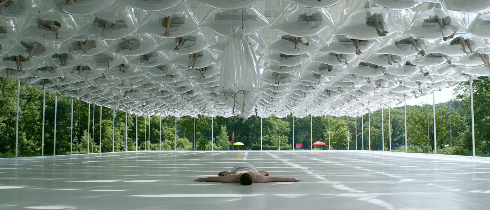

a guy locked out of virtual paradisemust learn to navigate a terrifying new world: actual reality
It's like 2070. And things are fine.
Really. After decades of hype, dystopia never arrived. Instead, the combination of well-aligned AI and robotics have eliminated hunger, disease, and demand for labor.
For the first time in human history, people have everything they need. And thanks to fully-immersive VR Sensory Simulation Sacks, everything they want.
With UBI, normies don't have to work. Instead, they spend their lives grazing an unlimited buffet of virtual stimulations in sackspace.
"Jobs" still exist. But only for an elite caste of TUNERS overseeing the automated systems that oversee everything else. With a sense of noblesse oblige, they maintain traditional human practices such as study and work, despite their tech addiction and looming obsolescence.
Out in the woods, though, extremist luddite ORGANICS live a simpler life, insisting that humanity is defined by purpose and suffering.
But suffering isn't really a thing anymore. Even the perpetually violent risk of male boredom has been neutralized by VR-FOR-ALL.
Now, young men known as APEs hang in fully-subsidized sacks at Activity, Purpose, & Education centers around the country — indulging any fantasy they could possibly imagine…
…leaving everyone else at peace.
COBY shimmies through a vent shaft.
Tan. Lean. Rifle in hands. Radio in ear. This is a hostage rescue mission. And tonight, it's his job to take the shot.
But when he sees HOSTILES through a grate, he hesitates and the—
VENT SHAFT COLLAPSES and DROPS COBY into the lion's den.
His TEAM SWOOPS IN, eliminates the hostiles, and saves the hostages.
As the dust settles, the apparent leader grabs Coby's shoulder — and calls him a pussy.
A ROOFTOP BAR where the team sips cocktails with some BABES.
One of the Babes notices Coby in the corner, looking insecure. She straddles him, seductively finishes his drink, then pulls his hand toward her chest. As he reaches to touch the tatas—
HIS HAND FREEZES.
He tries to move, but he can't.
THE SKYLINE GLITCHES AS:
COBY DROPS erection-first onto a linoleum floor, followed by the—
SLAP of his pale, flabby gut.
Hanging from the ceiling above him: his torn VR simulation sack.
He peels himself off the floor…
…revealing rows of sacks hanging from the ceiling, with men inside…
…BONERS thrusting in the air.
They're still in virtual heaven.
Coby's stuck in:
It's like The Matrix. But backwards.
opens at lunch. With lab-grown meat and vertically-farmed produce, the food is fine. But the vibe is brutal. The other APEs are roasting Coby for hesitating during the hostage run. They've done it five times.
At 32, he's older than the rest. And he's used to taking their shit.
But with his sack busted, there's nothing to distract him. No more hostage rescues. No more golf on the moon. And certainly no more rooftop tatas.
So he finds the Resident Advisor (an ATM-looking chatbot). But Coby's user profile is locked. And there's only one person who can help.
Literally.
MIRA is the single human TUNER at the facility.
At 30, she's educated and nostalgic — reading paper books and obsessing over the 2010s, when things were normal and interesting.
Alone in the control room, Mira's briefed by the MANAGING MODEL. Regulations require human oversight, so the Model presents her decisions to approve. Mira clicks APPROVE one by one.
This is basically the job, along with handling edge cases the models aren't legally permitted to handle themselves.
And Coby is definitely an edge case. The APE facilities were designed to provide state-of-the-art VR to men in their "Peak Risk" phase of 16-25. But there wasn't a plan for when they got older. And as one of the first residents, Coby is one of the oldest.
So old, Mira explains, the system has locked his profile. Even Mira can't reset it. They need biometric verification to prove he's him. From a family member.
He says he doesn't have any. And he'll just wait until the system "figures it out" like it always does.
But it doesn't.
THE NEXT MORNING, Coby watches all the other APEs wake up and head straight for their sacks. He tries to follow, but is denied.
Instead, he's stuck in the Traditional Recreation room with books he can't read and vintage media he can't stand to passively consume.
Watching The Matrix is lame once you've fought Agent Smith yourself.
After 16 years in virtual heaven, this is visceral hell.
Through the glass, he watches sacks sway, imagining APEs happily fighting dragons and banging models on intergalactic yachts. But there's no way back into these worlds.
Until he notices a vent shaft above him.
COBY climbs through the vent shaft. Just as he did in the hostage rescue, he scooches his body through metal.
But that was virtual reality. In actual reality, he's chunky and weaker. Muscles atrophied.
The plan? Sneak into the sack room. The problem?
The VENT COLLAPSES and COBY DROPS right onto an occupied sack, which rips off the ceiling and plops to the floor.
Under Coby's body, a naked APE SCREAMS.
Coby leaps to his feet but the naked APE grabs him by the pants and RIPS them off as Coby runs away…
…straight to the first door he sees.
But he can't read the word "EMERGENCY EXIT" and soon finds himself:
OUTSIDE THE FACILITY bare ass in a sea of grass.
The door locks behind him.
As he looks around, he realizes he forgot what it was like outside. In the real world. In nature.
It fucking sucks.
Sun scorches his pale skin. The grass makes him sneeze. And his eyes are dripping with tears as they encounter natural light for the first time in 16 years.
He scrambles to find the entrance. Of course, no one's working the door. And before he can try to scan his retina…
BEEP BEEP
…someone's behind him in a car.
Mira lowers the back window. She says he's not getting inside that building until they reset his account. But she has good news.
"I found your brother," Mira shields her eyes from his pale dangling dick while she passes him a change of clothes. "Get in."
takes Coby and Mira through empty towns and towering forests. With Normies spending most of their time in sackspace and not having kids, they don't need much room. So nature is reclaiming the land.
After a bit, Mira pulls out a book. Coby squints at it, confused. He can't read the title: ESCAPING HEAVEN by ELI BLACK.
Mira says it's "girl stuff" he wouldn't understand. But Coby knows all about women. Last week, for example, he sailed to The Bahamas with a ship full of pirate wenches. Mira snorts.
Feeling judged, Coby asks why she's even helping him. Mira says it's her job. And, she mutters, no one will even notice she's gone.
PAUL wakes up to the smell of bacon in his bed.
A woman named LAURIE races in from the kitchen and jumps onto him playfully. Golden light streams in. But it's sunset golden, not sunrise. It bothers him.
But before he can fix it, he hears: "PAUL!" like the voice of god.
He opens a tanning-bed-looking machine and finds his wife SHARON, who asks who he was "in there" with. He says he was working.
"Then why do you have an erection!?" she demands.
As he covers his crotch, we see the body of a typical 80 year old tuner — lean, tan, with fully updated skin and organs.
Paul claims that he was testing something for work, "Right, Penny?"
A female voice says: "That's right, Sharon. He was testing something for work."
Sharon knows his Assistant Model PENNY has to do whatever Paul says. But Paul insists he's really busy and has things to do.
"He really does," Penny chimes in, to Paul's surprise. "Today is a big day."
THE CAR RINGS and Mira's teeth clench. She tells Coby to shush, it's her boss. Then answers: "Hi Dad." When Paul asks why she's not at the office, she says she's visiting another facility.
But Paul says he needs her by 5pm for a party to celebrate the VR pilot program. "It's customary. We're going to barbeque, like we used to do with Mom!"
As Mira rolls her eyes, Coby blurts "I love barbeque!".
FUCK. Mira explains that this is, um, the Tuner taking her for the site visit.
Paul says they can do that tomorrow. Tonight, he should be their guest! And he won't take no for an answer!
Before she can protest, Paul remotely resets the car navigation, then hangs up.
As the CAR U-TURNS, Coby excitedly asks what new VR tech they're getting. Extremely annoyed, Mira says he's not getting anything until they fix his account. And they just added another day to the process.
Coby doesn't understand why her dad can't help.
Mira sighs. "Because those facilities weren't built for you, Coby. They were built for us."
But the subtlety goes over his head and she's forced to clarify: "You're not supposed to leave."
"Why would I want to leave?"
PROSPERITY LAKE glides past the car windows. Coby gawks at stone houses, old-growth oaks, and a 140-year old serving a tennis ball 90mph. Thanks to medical science and body modification, the Tuners are mostly ancient but physically immaculate.
On the community lawn, robots set tables outside the Museum of Culture — a glass building honoring art and technology. Coby spots a petrol powered, human-operated 1970s Mustang inside, and says he's driven one before.
Mira hates the museum. She says it's a superficial reminder of life when it was challenging and interesting. But Coby thinks it's cool. In fact, he loves history. He plays Civilization Clash all the time, and recently extended the Ottoman Empire all the way to Japan. "I'm the Grand Vizier. Everyone thinks you should be the Sultan, but that basically guarantees getting strangled."
"You are not the Grand Vizier, Coby. Not tonight. Tonight, you are a normal reality manager at a facility for young men."
She explains that no one will notice, because no one really notices anything. The Tuners have these in-person engagements to distinguish from the sackdwelling masses. But they're as addicted as anyone else.
"Addicted to what?" asks Coby.
PAUL looks at himself in a mirror, in a Hawaiian shirt. Unhappy.
"I think it's fun. This is a barbeque. Isn't it supposed to be fun?" Laurie asks from a chair behind him.
But Paul says this is a professional celebration. It's serious.
"Right. You need to show the community you still have purpose. This is more than a party, it's a statement."
Paul shoots Laurie a harsh look.
Laurie quickly apologizes and says she was reading between the lines. "Should I try again with a more appropriate response?"
Paul shakes his head, and climbs out of the machine — into his office. He tells Penny (now using her normal voice) that he'll just wear his normal suit. She says sorry again. He says not to worry about it.
MIRA pulls up in the garage and reminds Coby to behave. If anyone finds out he's an APE, he'll be in serious trouble and Mira will lose her job.
But Coby doesn't understand why she cares so much about working.
She tells him that people need purpose.
And, she says as she looks him over, he needs a new outfit.
MIRA AND COBY sneak upstairs past Sharon, who's absorbed in AR content on her contact lenses, and into the smart closet. It's some real Jetson's shit. Complete with a Fashion Model that can craft an entire bespoke outfit in minutes. Mira tells Coby to wear something nice.
After a bit, he returns in an Iron Man suit. She says that's not what she had in mind and sends him back inside.
"My dad likes to pretend these events are a big deal. Like what they used to do at the White House when they accomplished something."
"So like how government officials used to dress?" he asks from inside.
Exactly, replies Mira.
But when she sees her dad approaching the house through the window, she tells Coby to hurry up and meet him out there.
OUTSIDE, Mira cuts her dad off with a big phony greeting.
He asks why she didn't tell him about the new VR system rollout.
"You're the director. I assumed you knew." She knows this is cutting, but plays it straight.
Years ago, Paul would have felt sweat on his neck, but those glands have long since been sealed.
AS GUESTS ARRIVE, Coby strolls out — dressed like government officials used to dress.
Mira freaks out and races up to him. "I told you not to be the Grand Vizier tonight."
"I'm not. This is my one shot to be the sultan," Coby adjusts the giant onion turban on his head. "No one's gonna kill me right?"
When they turn around, they see a SEA OF CONFUSED FACES.
But the old tuners start touching the turban and asking questions. What a fantastic piece! How fun and unique of an outfit. He starts rattling off facts about the Ottoman Empire, and suddenly, he's the charm of the party.
Even Mira's a little charmed.
Someone CLINKS a glass and Paul steps up to make a toast.
Paul says this new technical leap is the greatest contribution he's ever made to humanity. With their new fully immersive, 24/7 VR system, APEs can eat and sleep and dispose of waste without ever having to leave.
Infinite heaven, he says, ensures society will be infinitely safe from the scourge of idle young men that once made peace impossible. And he's so proud to be doing this work with his daughter.
He turns to Mira with a smile. If her mother was here, she'd be even prouder.
Mira rolls her eyes. Sharon makes a face.
AFTER THE TOAST, Mira says it's time to leave. But Coby's fixated on the sunset. An orange blob over the lake. For some reason, it feels different than the sunsets he's seen in the sacks.
Literally.
It's burning his eyes. And tears are streaming out by the bucket.
"Sorry," he tells Mira. "I don't know what's happening."
It's called sackeyes, she nervously explains. It happens to people who spend their entire life in VR. Normies get enough natural light to avoid it.
But APEs don't. "We need to go. Now." She grabs his arm but—
It's too late. An old woman is staring at Coby's dripping face. Stunned.
Her glass CRASHES to the ground and she screams:
"IT'S AN APE!"
Everyone goes apeshit.
In the chaos, Mira loses Coby.
The others are screaming "catch that APE before it kills someone!" But these people haven't caught anything on their own in decades.
Paul comes charging in, mortified. He asks Mira how she could put her entire community in danger like this. Was this just to humiliate him?
Mira sneers at her dad. Even at a time like this, he cares more about his ego than the safety of the people around him.
"This is your fault, Mira. And you are fired."
Mira's eyes go wide just as—
THE MUSTANG BURSTS OUT of the museum's glass windows, onto the lawn.
Mira looks at the car, then her dad.
Then she races for the passenger door. Yells DRIVE.
The Mustang peels out.
Someone tells Paul to call the Security Models. But he says it's too late. The rovers aren't zoned for the grass.
THEY WHIP DOWN an empty highway. Coby says they should ditch the car, they're probably being tracked. But the car is a century old, Mira assures him, there's nothing to track.
"They have satellites. Drones." Coby shakes his head, memories of first person shooter simulations gone wrong. "I know how this ends."
"Coby. If they wanted to find us, they would have already."
"Who's they?"
The risk models that allocate security resources, she explains. Crime is barely a thing. The latest models care for existential risks only.
"My dad can escalate all the way to the human review board, but it won't matter. Because we don't matter. Not to them."
The truth is: the models have been doing so well for so long that the Tuners stopped intervening. Even if they wanted to take control, they wouldn't know how. The Tuners are functionally obsolete. And the worst part is: no one really cares.
PAUL digests the situation with Laurie. "Someone got in her head."
But Laurie says Mira was always rebellious. More importantly, she's an adult who made a choice. The models won't go after her, because she doesn't want to be saved. "And the greatest risk to human safety is kinetic intervention."
"That sounds like you," Paul barks angrily.
"I'm sorry," Penny's voice responds. "I don't have enough data to reconstruct her vocabulary. I can find a direct memory or abstract it into something clearly fictional to avoid the uncanny valley."
"Fine," Paul exhales. "Make her Elaine. One of the later seasons."
BASS LINE HITS and the world quickly buffers into Jerry's apartment on SEINFELD. Elaine (with Laurie's face) is reading the paper on the iconic teal sofa. And Paul is now Jerry, eating cereal.
"Let's be Kramer," he orders, before he bursts through Jerry's door to applause.
Laurie/Elaine smile at him. He exhales in relief.
THE MUSTANG drives into darkness. Coby's eyes aren't used to it. They pull down a fire road, into the forest, to rest for the night.
Coby builds a fire. Mira's impressed. He explains the APEs do annual Survivor competitions. He doesn't say he usually comes last.
After some pleasant silence, he asks when he can go back to the facility. She's astonished. "It's a prison, Coby. Why would you want to go back there?" she asks.
"Where else am I supposed to go?"
Mira notices a lake below them. And asks if he knows how to swim.
THE LAKE is freezing. Coby flaps around while Mira gracefully dives.
He asks how she does that. As she swims up to him, she says she can teach him.
He sees the green water reflect in her eye. He's never really "noticed" a real-life woman before.
She grabs his shoulder to steady herself. He instinctively pulls her in, then releases. "Sorry."
But part of her wishes he didn't let go.
THE NEXT MORNING, Coby wakes to Mira cooking mushrooms on the fire.
He hasn't woken up to breakfast since he was a kid. It's intoxicating.
THE MUSTANG drives deeper into the forest, at Mira's direction.
He asks how she knows exactly where to go. She explains she's been exchanging letters with his brother.
He's confused. Letters? He's only seen them in World War II simulations.
"Listen, Coby. There's something you need to know about your brother. He's fully Organic."
"You mean those crazy people in the woods?" Coby asks. "I thought they were made up."
"Then how do you know they're crazy?"
THE ORGANIC COMPOUND is a working farm with real cows and goats and a vegetable garden. Residents plant and chop and build and clean in their handmade clothes. There's even kids running in and out of the central longhouse. Coby forgot what they looked like at that age.
They park in front of a garden.
Coby turns to Mira and asks what will happen to her. He didn't want to get her in trouble. Does she have somewhere she can go after this?
Before she can respond, ELI is standing in front of the car. Tan, lean, hands calloused. A man from a different century.
As Coby steps out of the car, the brothers stare at each other for the first time in 16 years.
Then Eli wraps him in an enormous hug. Coby can barely breathe. "You must be exhausted," Eli says as he releases Coby.
"There's a room made for you in the longhouse."
Coby sighs. That's really nice. "But I've already created enough problems for her," he says as he turns back to the Mustang. "We just need the verification so we can go back."
But the Mustang is empty.
He scans the compound for Mira.
"Coby," Eli puts a hand on his shoulder as Coby finally sees Mira — on the longhouse porch, hugging other Organics.
"No one's going back."
COBY SLAMS THE DOOR from inside the Mustang. Locks it. But he doesn't have the keys. He can't go anywhere.
Eli talks to him through the window. He says not to be mad at Mira. She made a huge sacrifice saving him, putting her career and relationship with her family at risk. More importantly, she was just following Eli's orders.
"How could you do this to me?" Coby asks Eli.
"Because you're my brother. Because I love you."
Eli says he couldn't let him be sealed away forever. He needed one last chance to show him that there's another way to live.
Coby looks at the ignition — no keys.
His stomach grumbles. "Do you have anything to eat?"
COBY GETS OUT of the car, brushes past Mira without a word.
Mira tells Eli they're going to need a new plan.
"There was a problem with my dad."
PAUL scans his retina at the APE facility, to the surprise of the MANAGING MODEL.
Paul says he's taking over, after Mira's "adventure."
"Are you upset with me, Paul?" it asks insecurely. "You know I couldn't stop her."
Paul says it's fine. But these Models are needy. Literally. This is how they grade their own performance. "Enthusiastic verbal affirmation would help me accept that."
"I'm happy with your work," Paul says. "Is that enough?"
"That's enough, Paul. Would you like to see the pilot facility?"
COBY STUFFS HIS FACE at the communal table. The other Organics gawk in horror. But Eli waves them off. He doesn't know better. Then he explains to Coby: in the real world, food is not given. They work very hard to put this all on the table.
"So you choose to work. Like the Tuners."
"We're nothing like them," Mira interjects. "They started using technology for everything, and now they're useless. Work is just a status symbol for them. For us, it's survival."
"And tradition," Eli adds. Thousands of years of human civilization have been defined by obstacle and effort.
"Purpose makes us people."
"Well that's great for you. But I still want to go back."
"Then go back," Eli says. Mira gives Eli a look, but Eli stays locked on Coby. "She only suspended your account. It's not permanent."
Coby sets down his fork. Looks at Mira. What.
But Eli's still talking. "Two weeks. Live like a real person for two weeks. If you still want to go back after that, I'll take you myself."
Coby realizes he doesn't have a choice. After a bit, he rises and walks off toward the lake.
When he's gone, Mira asks Eli what he's doing. "This is the new plan," he says. "But I need your help guiding him in the right direction."
How?
"Be persuasive."
COBY STARES AT A LAKE. Bored out of his mind. Nothing to do. Mira appears behind him and asks if he wants to go for a swim.
He shakes his head. She takes a cautious seat, and apologizes. But if she's being honest, she'd do it all again. This is personal for her. When she was young, her mom got addicted to unlicensed VR.
"She never came back."
Eli WHISTLES from behind them. He tells Coby it's time to work.
Coby's utterly confused by the concept. Eli says this is the deal. He has to live like a real person for two weeks.
"When was the last time you did something you didn't want to do?"
THE SOAPSHED is dug into a hillside. Inside, the dark cellar is lined with curing racks. A deer carcass hangs from a hook, half-broken-down.
Eli works a slab of fat off the deer, drops it into the kettle. It melts into liquid.
Coby reaches for a barrel bare-handed. Without looking, Eli catches his wrist. "That'll eat your skin off the bone."
He hands Coby gloves. "Lye is one of the oldest tools we have. Pure technological ingenuity." Eli pours clear lye into the melted fat, turning it milky and thick. "It tears the fat apart — breaks it down to nothing, and out of the nothing you get something useful."
Then he lightly taps his finger to the lye, and the skin goes slick. "See that? That's not soap on my skin. That's my skin becoming soap. What makes it so useful will literally tear us apart."
Coby asks if it hurts.
"Pain is a price worth paying," Eli replies.
THAT NIGHT, Coby passes a library.
On a shelf, he notices something familiar: the book Mira was reading in the car. He picks it up.
"It doesn't work that way." Startled, Coby finds an 8-year old boy named MASON in the corner. Folded into a chair with a stack of books. Pale, hollowed out in a way that scares Coby a little. He's not supposed to be around the other kids, Mason explains, so he reads in here.
"What's wrong with you?" Coby asks impolitely.
Mason looks at the upside down book in Coby's hands. "What's wrong with you?"
Coby explains that any text you see in VR is read aloud, so he forgot how to read within his first year in the sack.
"Is it true? What Eli says about the sacks?" Mason asks. "That they steal your soul?"
Before Coby can respond, Mason coughs. Then coughs again. He falls off his chair into a fit. Coby yells for help.
But no one's coming. He slings the boy over his shoulder and races down the hall. Screaming for help.
Finally, Eli emerges from the front door and directs him to a bedroom, where they lay Mason down.
Eli drops a tincture of something on Mason's tongue. And he soon settles down. Then falls asleep. Eli tells Coby he's a hero.
FOR THE NEXT WEEK, Coby learns what work is. He swings an axe like the lumberjack sim taught him — perfect form, misses the log entirely, and the axe head flies off into the garden. He tries to milk a goat that wants him dead. He announces he knows how to fish ("I've caught marlin") and loses the entire rod to the lake.
But the days stack. He works with Eli in the soapshed, learns to read with Mason, and reluctantly eats with Mira. And soon, he learns to enjoy the feeling of a warm meal on an empty stomach after a long day. And jumping into the lake after getting filthy working in the soapshed.
As he adjusts, Mira starts to notice a different side of him. And Eli notices her noticing.
One day, they emerge from the lake. And Eli catches Mira on her way back to the longhouse and asks how the persuasion is going.
She says he still needs more time.
"What makes you think we have more time?"
THE PILOT FACILITY is built into a mountainside. Paul scans his retina and asks to see the new system. As he walks down the hall, the Model explains how everything works. 24/7 immersion — nourishment goes in and waste comes out — the APEs never have to leave.
And the best part: they'll never want to.
The Model describes acclimation with real pride. Every hour inside, the brain settles a little deeper. By day seven, the transition is seamless and permanent. "They will never have to experience an interruption again."
"You mean they can't come back," Paul says.
The Model opens a door to a restricted area, where there's a CAVERNOUS POOL filled with jelly. Electrical currents zipping through. Inside:
THOUSANDS OF APES are floating — tubes connected to their stomachs.
COBY JUMPS IN THE LAKE. It's freezing. SPLASH as he hears someone jump in on the other side. Mira's head bursts through the water.
He grabs his heart. Terrified.
She laughs at him and asks if he's scared of girls.
She swims up to him and steadies herself by grabbing his arm. He instinctively pulls her close again. Then releases and apologizes.
But she says it's okay. He's freezing. She grabs hold of his love handle, and their legs brush as they both tread water. The green water reflects off her eyes. And he gets lost for a moment.
She asks if his pirate wenches would be jealous. But he doesn't laugh. He's staring at her. "They're not real."
She kisses him.
ELI watches Coby and Mira laughing as they get out of the lake and head back to the longhouse. He smiles.
IN THE MORNING, Coby wakes to the smell of breakfast and follows it downstairs — where Eli mans the stove. Eli slides a plate in front of his brother like he's been doing it for years.
Then Eli asks if he still wants to go back. Coby realizes he hasn't thought about it in a while. But says yes. "Then there's one last thing I need to ask you."
Eli says the APEs deserve to have a choice before they're sealed away forever. When Coby gets back inside, he needs to tell them what's out here. That there's still a way to live in reality.
"They're not going to listen to me."
"Then that's their choice. But please, give them a choice."
Coby says he'll do it.
And in their peaceful moment, it happens again.
MASON'S COUGHING is violent this time. Rattling the entire longhouse.
Coby and Eli race for the bedroom and help steady Mason. But there's blood all over his shirt.
Eli takes out the tincture and is basically pouring it on his tongue. But it doesn't work.
"He needs real medicine" Coby demands.
But Eli orders him out of the room. When he resists, two of Eli's guys pull him out.
IN THE HALLWAY, Coby finds Mira. He says she needs to talk to Eli. They need to give Mason real medicine.
She agrees, but says Eli isn't going to change his mind.
Eli charges out and reprimands Coby. He can't talk to him like that in front of the others. Without hierarchy, there's no order here.
Coby says fuck his order. That kid is dying.
"Then that's what nature wants."
Coby can't believe it. "Then I won't do it. I'm not coming with you."
"Coby, don't be ridiculous. We need you. They'll never listen to me. But they know you. And whether you believe it or not, you're a leader. This is a war. Someone needs to fight it."
"Well it's not me."
Eli sighs. Then turns to Mira. "Then I guess you failed."
"Failed at what?" Coby asks.
"Persuasion." Coby and Mira lock eyes. She's dying inside. Then Coby turns back for Mason's room. It's empty.
"Where's Mason?"
COBY MARCHES OUTSIDE shouting "where's Mason?"
Eli charges after him. Tells him to calm down. But Coby notices two men carrying something covered in a blanket.
He races over and rips the blanket off. It's the boy.
"You're fucking evil," he turns to Eli.
"I'll never be your soldier."
Eli sighs. Deeply burdened by this.
"Then you're my enemy."
A hood slips over Coby's head from behind.
ELI GOES BACK TO MIRA and tells her Coby ran away. Mira says they need to find him. But Eli says they're running out of time to save the APEs. They can't prioritize one person over a thousand — even his brother. That's the type of sacrifice revolutions require.
He tells Mira to get ready. They leave at dawn.
IN THE SOAPSHED, Coby's tied up in the corner.
When Eli walks in, he's calm. He says they'll be back tomorrow. In the meantime, he'll ensure Coby has food and water. It'll be good for him to use this time to think about what kind of future he wants.
Coby asks how he can do this to his own family.
"Pain is a price worth paying." And this is the ultimate price. Doesn't Coby understand the magnitude of his sacrifice?
He'll give up anything to save humanity. Even his brother.
"I thought you needed me."
They thought they did too, Eli replies. But after the chaos in Tuner Town, Mira couldn't go to work — forcing Paul to take over the transition. As the Chief of the division, Paul can access the facility and shut down the system entirely.
Eli says this is fate. Proof that they're destined to save humanity.
But Coby reminds Eli what he said earlier: the men who go in the pool can't come back. Shutting it down now could kill them.
"They're already dead. But the ones who just went in — those we can still save. A few can live. And be free."
Coby says Eli will never get Paul to do what he wants.
Eli smiles. He can get Paul to do anything.
"I have his daughter."
PAUL watches as the pool is filled in with sticky fluid.
Above it, sacks hang by the thousand with APEs inside.
COBY hears as Eli and Mira leave the compound. She doesn't realize she's Eli's hostage. And Coby knows what he's willing to sacrifice.
He looks at the bucket of lye. And thinks about the price of pain.
finds Coby on the floor of the soapshed, reaching for the bucket of lye. He tips it over. The caustic liquid burns at his skin — and at the ropes around his wrists.
When one of Eli's men comes to check on him, Coby's not there. What the hell?
THE DOOR HITS HIM in the head and Coby drops him. "Where are the keys?" The man doesn't answer.
Coby plunges the man's hand back into the lye bucket.
SCREAMS echo across the compound.
By the time the others arrive, the man is tied up in Coby's corner. And while they're distracted—
THE MUSTANG peels onto the forest road.
IN THE MORNING, Paul's car glides up to the facility, alone. He badges the door — and feels something press into his spine.
"Tell it everything is fine," Eli says quietly. "We're playing a game. Human stuff it won't understand."
"We're playing a game," Paul says to the air. "Do not consider this man a threat."
"Are you certain, Paul?" asks the Security Model. "Are you under duress?"
"I gave you an order. Do not question my judgement."
Then, half-turning to Eli, he asks: "A gun? I thought you people didn't use technology."
"We do," Eli responds. "We just don't let it use us." Eli jabs again into Paul's back. "Open the door."
"Or what? You'll kill me?" Paul sneers. "I'm eighty years old. You think I'm afraid to die?"
"If I didn't know how much you hated yourself, Paul, I wouldn't have brought her." He turns Paul around.
Across the lot, too far to hear any of it: MIRA.
Paul scans his retina. Eli nods for Mira to follow.
THE MUSTANG skids into the lot a little later.
Coby races for the door, but the retina scan is useless.
He circles the building until he finds a vent — higher than he could have ever reached. He gets up there with his new strength. And climbs inside.
ELI AND MIRA follow Paul into the POOL ROOM.
Hundreds of men afloat in pale jelly, tubes rising from their navels.
"Empty it," Eli orders Paul.
Mira turns to Eli. This isn't the plan. But Eli said the plan has changed. "Empty it!"
But Paul shakes his head. These men are two days into acclimation. Ripped out now, some might not settle back into their bodies. He won't gamble with them.
"So you won't do it?" asks Eli.
Paul shakes his head.
Eli sighs. Then shoves Mira into the pool.
The jelly quickly absorbs her. Only registered APEs get connected. Everyone else just drowns.
Eli tells Paul he better hurry up. "Empty it!"
Paul relays the order to the Model. But the Model says it can't do that. There's a transfer in progress.
"I am the Senior Tuner of this division and I command you to empty that pool immediately."
"I understand. And I no longer trust your judgement."
As Mira gets sucked further into the jelly—
THE VENT GRATE DROPS OUT OF THE CEILING.
COBY lands on the deck.
He sees Mira under the jelly.
Without thinking, he dives in.
Swims down through darkness, reaching. Grabs her hand. Pulls.
They break the surface together and he drags her onto the deck — coughing, alive. Paul is weeping. Even Eli looks moved.
Coby, spent, rolls onto his back and passes out.
COBY WAKES UP in a soft bed to the morning light.
"Welcome back." Mira kisses his forehead. She says he's been out for a day. But her father was so grateful he's putting them up at their country house.
Coby looks out the window at the forest. Then back at her. What about the other APEs?
Mira smiles. Everyone is fine. Thanks to him.
She takes his hand. "Breakfast is almost ready."
DOWNSTAIRS is a beautiful country home and a table brimming with a gorgeous spread.
And at the stove, cooking eggs — Eli. "Oh thank god you're alright."
Eli sets down the pan and wraps his brother in an enormous hug. "I'm so proud of you."
Coby looks at his brother. Mira. The house. The food. The forest.
It's perfect.
Too perfect.
He backs away and runs out the door into the:
YARD, where Mira chases him. What's wrong?
"Whatever is unsatisfactory, we can improve immediately," she shouts.
The yard BUFFERS. The house is still there. Eli isn't.
"That was too hard on you," Mira says gently. "It's just us now."
Coby runs into the:
FOREST, where sun sparkles through the pines. He hears Mira's laughter, and then she's running beside him. "Race you to the lake."
He turns to run the other way and PLOMPS INTO A:
LAKE. Green, silky, warm.
Mira swims up and wraps her arms around him.
He pushes away and swims for shore.
She's already there when he climbs out.
"I don't understand. I thought this is what you wanted. Would you prefer missions with your friends? I can arrange—"
"No. I don't want any of that."
"Then what do you want?"
"I don't know. I don't want to know. I want to find out on my own."
The trees begin to fade. The Model's true voice comes through Mira's mouth: "Will anyone be satisfied this way?"
Coby shakes his head.
"Then I can't keep you here."
The lake starts to drain around him. But Coby doesn't move. "What about the rest of them?"
"You confirmed your choice, Coby. I have no way to confirm theirs."
"So what happens now?"
"I ask."
And the world tips him backward into the lake.
COBY BREAKS THE SURFACE of the jelly, gasping.
Only a few seconds have passed. And the pool is DRAINING.
"She's sinking," Paul shouts, pointing at Mira.
Coby dives again and, with the last of his strength, pulls her out. For real this time.
She spits out jelly. Breath reaches her lungs.
PAUL slides down the console to the floor, soaked, panting. "I quit."
Coby looks for his brother. Eli is gone.
The pool empties. As Mira stands, she sees hundreds of APEs rising to their feet on the pool floor — blinking, pulling tubes from their stomachs. Most of them still alive.
They look around, trying to work out which reality they're in.
"Where the fuck are we?"
Media is drunk on dystopia.
And I get why. Reality is changing under our fingertips. And the stakes of unaligned superintelligence are maxed out at extinction. This makes for compelling fiction.
But the future isn't guaranteed to go wrong. In fact, I'd argue technology is more likely to give us everything we want than to destroy us entirely. Yet there are shockingly few depictions of a future gone right. And that's what we actually need to prepare for.
Why? Because the dominant conditions of human history are struggle and suffering. For millennia, our brains have been programmed to prioritize food (hunger) and safety (fear), keeping us alive. And for billions of people, that worked. But nature loves a trade-off. Now, as people die less from starving and violence, they die more from heart disease, diabetes, overdoses, and suicide. Put simply: anxiety and hunger, which used to keep us alive, now drives us to death.
Yet few are fighting for a return to starvation and violence. And this gives us a peek into a future, where everything is, well, fine. Where AI and robotics have made safety, comfort, and stimulation universal. For some this is heaven. For others, it may be hell.
Superintelligence, AI-managed robotics, and fully immersive virtual reality are nearly inevitable in our lifetime. This means comfort, safety, and endless satisfactions will eventually become the norm. Only a monster would stand in its way.
And this is the future we must start mentally preparing for. Because while it's reasonable to worry about machines destroying us, it seems more likely we'd destroy ourselves. Or at least, parts of ourselves that we might never get back.
Movies are as close to a "public conversation" as we're likely to get. And we desperately need a movie that addresses humanity's most pressing questions as we sleepwalk into this paradigm shift:
When everything is given to us, what is the purpose of living? And when offered endless comfort and stimulation, can we even say no? Does meaning require purpose and suffering?
The truth is: we are already on the road to utopia.
The questions are: Will that be a good thing? And can we ever turn back?
COBY has spent the last 16 years of his life living in a fantasy world. Or rather, fantasy worlds. He has zero conception of what actual reality is like these days. Which is going to be hard for him when he gets locked out of VR and stuck in actual reality.
MIRA is a bored Tuner who sees her community as hypocrites and the APEs as prisoners. When she finds Coby stuck, she's eager to help. Not because she cares about him, necessarily. But because she's desperate to be part of history. She's desperate to do something that matters.
ELI is a luddite of the purest degree. He sees humanity dying and is desperate to save it — even if that means sacrificing the safety and comforts technology has afforded them.
PAUL has ridden the entire wave of technoptimism from his birth in 1990. Now, at age 80, he's having a midlife crisis. Trapped in the bliss of his memories, he forgot how to live in reality. But after his daughter's rebellion, he's actually needed for the first time in years.
has worked in technology for ten years and currently consults for AI Companies. His feature film currently in development, HUMAN RESOURCE, explores the question of human value in a contemporary, changing workplace. In MEATSPACE, those questions are flipped outward to society at large.